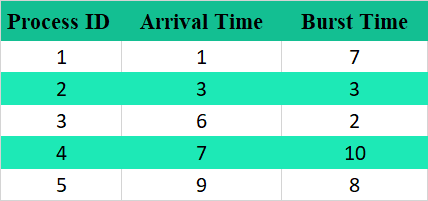
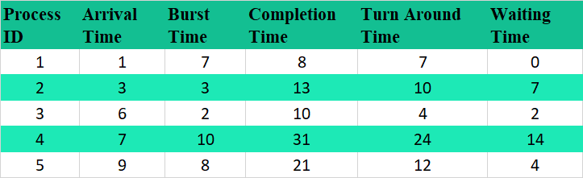

SJF algorithm associates with each process the length of the process’s next CPU burst. When the CPU is available, it is assigned to the process that has the smallest next CPU burst. If the next CPU bursts of two processes are the same, FCFS scheduling is used to break the tie.
In order to find the process which needs to be executed, sort all the processes from the given set of processes according to their arrival time. This ensures that the process with the shortest burst time which has arrived first is executed first.
Example:Let us consider 5 processes, P1, P2, P3, P4 and P5.The following are the respective arrival and burst times of the given processes.
Using SJF, the OS schedules the process which has the lowest burst time among the available processes in the ready queue
We can calculate the values of completion time, waiting time and turnaround time of each process using the formulas given below.
Turnaround time = Completion time – Arrival time Waiting time = Turnaround time – Burst time
Average turnaround time = Total turnaround time/number of processes
= (7 + 10 + 4 + 24 + 12) / 5
= 57/5
= 11.4
Average waiting time = Total waiting time/number of processes
= (0 + 7 + 2 + 14 + 4) / 5
= 27/5
= 5.4
A Gantt chart is a visualization that helps in scheduling, managing, and monitoring specific tasks and resources in a project. It consists of a list of tasks and bars depicting each task's progress.
Gantt chart for SJF Scheduling is: